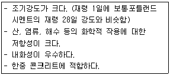
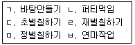

조경기능사 (2010-03-28 기출문제)
1과목: 조경일반
1. 다음은 정원과 바람과의 관계에 대한 설명이다. 이중 적당하지 않은 것은?
- 통풍이 잘 이루어지지 않으면 식물은 병해충의 피해를 받기 쉽다
- 겨울에 북서풍이 불어오는 곳은 바람막이를 위해 상록수를 식재한다.
- 주택안의 통풍을 위해서 담장은 낮고 건물 가까이 위치하는 것이 좋다.
- 생 울타리는 바람을 막는데 효과적이며, 시선을 유도할 수 있다.
(정답률: 87%)

2. 임해전이 주로 직선으로 된 연못의 서W고에 남북축 선상에 배치되어 있고, 연못 내 돌을 쌓아 무산 12봉을 본 딴 석가산을 조성한 통일신라시대에 건립된 조경유적은?
- 안압지
- 부용지
- 포석정
- 향원지
(정답률: 90%)
3. 제도에서 사용되는 물체의 중심선, 절단선, 경계선 등을 표시하는데 가장 적합한 선은?
- 실선
- 파선
- 1점쇄선
- 2점쇄선
(정답률: 90%)
4. 도시공원 및 녹지 등에 관한 법률 시행규칙상 도시공원 중 설치규모가 가장 큰 곳은?
- 광역권근린공원
- 체육공원
- 묘지공원
- 도시지역권근린공원
(정답률: 84%)
5. 조경의 설명으로 잘못 된 것은?
- 도시에 자연을 도입하는 것이다.
- 급속한 공업화를 도모해서 인간생활이 편리하게 하는 것이다.
- 도시를 건강하고 아름답게 하는 것이다.
- 옥외에서의 운동, 산책, 휴양 등의 효과를 목적으로 한다.
(정답률: 88%)
6. S.Gold(1980)의 레크리에이션 계획에 있어 과거의 일반 대중이 여가시간에 언제, 어디에서, 무엇을 하는가를 상세하게 파악하여 그들의 행동패턴에 맞추어 계획하는 방법은?
- 자원접근방법
- 활동접근방법
- 경제접근방법
- 행태접근방법
(정답률: 64%)
7. 조경을 프로젝트의 수행단계별로 구분할 때, 기능적으로 다른 분류에 해당하는 곳은?
- 전통민가
- 휴양지
- 유원지
- 골프장
(정답률: 86%)
8. 자유로운 선이나 재료를 써서 자연 그대로의 경관 또는 그것에 가까운 것이 생기도록 조성하는 정원 양식은?
- 건축식
- 풍경식
- 정형식
- 규칙식
(정답률: 90%)
9. 식재, 포장, 계단, 분수 등과 같은 한정된 문제를 해결하기 위해 구성요소, 재료, 수목들을 선정하여 기능적이고 미적인 3차원적 공간을 구체적으로 창조하는데 초점을 두어 발전시키는 것은?
- 조경설계
- 평가
- 단지계획
- 조경계획
(정답률: 65%)
10. 형광등 아래서 물건을 고를 때 외부로 나가면 어떤색으로 보일까 망설이게 된다. 이처럼 조명 광에 의하여 물체의 색을 결정하는 광원의 성질은?
- 직진성
- 연색성
- 발광성
- 색순응
(정답률: 51%)
11. 골프 코스 중 출발지점을 무엇이라 하는가?
- 티
- 그린
- 페어웨이
- 러프
(정답률: 94%)
12. 스페인 정원의 대표적인 조경양식은?
- 중정정원
- 원로정원
- 공중정원
- 비스타정원
(정답률: 78%)
13. 아미산 후원 교태전의 굴뚝에 장식된 문양이 아닌 것은?
- 반송
- 매화
- 호랑이
- 해태
(정답률: 62%)
14. 고대 로마의 정원 배치는 3개의 중정으로 구성되어 있었다. 그중 사적인 기능을 가진 제2중정에 속하는 곳은?
- 아트리움
- 지스터스
- 페리스틸리움
- 아고라
(정답률: 82%)
15. 괴석이라고도 불리는 태호석이 특징적인 정원 요소로 사용된 나라는?
- 한국
- 일본
- 중국
- 인도
(정답률: 91%)
2과목: 조경재료
16. 다음 접착제로 사용되는 수지 중 접착력이 제일 우수한 것은?
- 요소수지
- 에폭시수지
- 멜라닌수지
- 페놀수지
(정답률: 69%)
17. 한여름에 뿌리분을 크게 하고 잎을 모조리 따낸 후 이식하면 쉽게 활착할 수 있는 나무는?
- 소나무
- 목련
- 단풍나무
- 섬잣나무
(정답률: 70%)
18. 다음과 같은 특징을 갖는 시멘트는?

- 알루미나 시멘트
- 실리카시멘트
- 포졸란시멘트
- 플라이애쉬시멘트
(정답률: 78%)
19. 지피식물에 해당하지 않는 것은?
- 인동덩굴
- 송악
- 금목서
- 맥문동
(정답률: 80%)
20. 흰색 계열의 작은 꽃은 5 ~ 6월에 피고 가을에 붉은 계통의 단풍잎 또는 관상가치가 있으며 음지사면에 식재하면 좋은 수종은?
- 왕벚나무
- 모과나무
- 국수나무
- 족제비싸리
(정답률: 64%)
21. 다음 중 상록침엽수에 해당하는 수종은?
- 은행나무
- 전나무
- 메타세콰이아
- 일본잎갈나무
(정답률: 73%)
22. 표면이 거칠고 투수율이 크므로 연기나 공기의 환기통으로 사용하는 관은?
- 테라코타
- 토관
- 강관
- 콘크리트관
(정답률: 82%)
23. 목재의 심재에 대한 설명으로 틀린 것은?
- 변재보다 비중이 크다.
- 변재보다 신축이 크다.
- 변재보다 내구성이 크다.
- 변재보다 강도가 크다.
(정답률: 76%)
24. 가을에 단풍이 노란색으로 물드는 수종은?
- 붉나무
- 붉은고로쇠나무
- 담쟁이덩굴
- 화살나무
(정답률: 84%)
25. 다음 중 단풍나무과 수종이 아닌 것은?
- 고로쇠나무
- 이나무
- 신나무
- 복자기
(정답률: 68%)
26. 여러해살이 화초에 해당되는 것은?
- 베고니아
- 금어초
- 맨드라미
- 금잔화
(정답률: 63%)
27. 다음 중 한지형 잔디에 속하지 않는 것은?
- 버뮤다그래스
- 켄터키블루그래스
- 퍼레니얼 라이그래스
- 톨훼스큐
(정답률: 83%)
28. 다음 시멘트에 관한 설명 중 틀린 것은?
- 포틀랜드시멘트에는 보통, 조강, 중용열, 백색 등이 있다.
- 시멘트의 제조방법에는 건식법, 습식법, 반습식법이 있다.
- 실리카 성분이 많아서 수화열이 작고 내구성이 좋아 댐과 같은 매시브한 콘크리트에 사용하는 것이 내황산염 포틀랜드시멘트이다.
- 철분, 마그네시아가 적은 백색점토와 석회석을 원료로 하고 소성연료는 중유를 사용하여 만들어지는 시멘트가 백색포틀랜드시멘트이다.
(정답률: 68%)
29. 비파괴검사에 의하여 검사할 수 없는 것은?
- 콘크리트 강도
- 콘크리트 배합비
- 철근부식유무
- 콘크리트 부재의 크기
(정답률: 59%)
30. 콘크리트의 측압은 콘크리트 타설전에 검토해야 할 매우 중요한 시공요인이다. 다음 중 콘크리트 측압에 영향을 미치는 요인에 대한 설명으로 틀린 것은?
- 콘크리트의 타설 높이가 높으면 측압은 커지게 된다.
- 콘크리트의 타설 속도가 빠르면 측압은 커지게 된다.
- 콘크리트의 슬럼프가 커질수록 측압은 커지게 된다.
- 콘크리트의 온도가 높을수록 측압은 커지게 된다.
(정답률: 61%)
31. 시멘트 공장에서 포틀랜드시멘트를 제조할 때 석고를 첨가하는 주요이유는?
- 시멘트의 강도 및 내구성 증진을 위하여
- 시멘트의 장기강도 발현성을 높이기 위하여
- 시멘트의 급격한 응결을 조정하기 위하여
- 시멘트의 건조수축을 작게 하기 위하여
(정답률: 75%)
32. 열가소성 수지의 일반적인 설명으로 부적합한 것은?
- 축합반응을 하여 고분자로 된 것이다.
- 열에 의해 연화 된다.
- 수장재로 이용 된다.
- 냉각하면 그 형태가 붕괴되지 않고 고체로 된다.
(정답률: 43%)
33. 화성암의 일종으로 돌 색깔은 흰색 또는 담회색으로 단단하고 내구성이 있어, 주로 경관석, 바닥 포장용, 석탑, 석등, 묘석 등에 사용되는 것은?
- 석회암
- 점판암
- 응회암
- 화강암
(정답률: 87%)
34. 공해에 대한 저항성은 강하나 맹아력이 약한 수종은?
- 이팝나무
- 메타세콰이아
- 쥐똥나무
- 느티나무
(정답률: 46%)
35. 수성페인트칠의 공정에 관한 순서가 바르게 된 것은?

- ㄱ-ㄷ-ㄴ-ㅁ-ㅂ-ㄹ
- ㄱ-ㄷ-ㄴ-ㅂ-ㄹ-ㅁ
- ㄱ-ㄴ-ㄷ-ㅂ-ㄹ-ㅁ
- ㄱ-ㄴ-ㄷ-ㅁ-ㅂ-ㄹ
(정답률: 49%)
3과목: 조경 시공 및 관리
36. 그해에 자란 가지에서 꽃눈이 분화하여 그해에 개화하기 때문에 2 ~ 3년 된 가지 등을 깊이 전정해도 좋은 수종은?
- 배롱나무
- 매화나무
- 명자나무
- 개나리
(정답률: 65%)
37. 설계도면에 표시하기 어려운 사항 및 공사수행에 관련된 제반 규정 및 요구사항 등을 구체적으로 글로 써서, 설계 내용의 전달을 명확히 하고 적정한 공사를 시행하기 위한 것은?
- 적산서
- 계약서
- 현장설명서
- 시방서
(정답률: 89%)
38. 다음 중 오리나무 갈색무늬병균의 전반에 대한 설명으로 옳은 것은?
- 곤충 및 소·동물에 의해서 전반된다.
- 물에 의해서 전반된다.
- 종자의 표면에 부착해서 전반된다.
- 바람에 의해서 전반된다.
(정답률: 62%)
39. 자연상태의 토량 1000m3을 굴착하면, 그 흐트러진 상태의 토양은 얼마가 되는가? (단, 토량변화율을 L=1.25, C=0.9라고 가정한다.)
- 900m3
- 1000m3
- 1125m3
- 1250m3
(정답률: 68%)
40. 다음 중 조경 수목의 병해와 방제 방법이 맞는 것은?
- 빗자루병 - 배수구 설치
- 검은점무늬병 - 만코제브수화제(다이센엠-45)
- 잎녹병 - 페니트로티온수화제(메프치온)
- 흰가루병 - 트리클로르폰수화제(드프록스)
(정답률: 42%)
41. 일반적으로 대형나무 및 경관적으로 중요한 곳에 설치하며, 나무줄기의 적당한 높이에서 고정한 와이어 로프를 세 방향으로 벌려서 지하에 고정하는 지주설치 방법은?
- 삼발이형
- 당김줄형
- 매몰형
- 연결형
(정답률: 83%)
42. 다음중 인공적인 수형을 만드는데 적합한 수종이 아닌 것은?
- 꽝꽝나무
- 아왜나무
- 주목
- 벚나무
(정답률: 79%)
43. 암거배수의 설명으로 가장 적합한 것은?
- 강우 시 표면에 떨어지는 물을 처리하기 위한 배수시설
- 땅 속으로 돌이나 관을 묻어 배수시키는 시설
- 지하수를 이용하기 위한 시설
- 돌이나 관을 땅에 수직으로 뚫어 기둥을 설치하는 시설
(정답률: 80%)
44. 벽천을 구성하고 있는 요소의 명칭이라고 할 수 없는 것은?
- 벽체
- 토수구
- 수반
- 낙수받이
(정답률: 60%)
45. 일반적으로 돌쌓기 시공 상 유의할 점으로 틀린 것은?
- 밑돌은 가장 큰 돌을, 아래부위에 쌓을수록 비교적 큰 돌을 쌓아 안전도를 높인다.
- 돌끼리 접촉이 좋도록 하고, 굄돌을 사용하여 안정되게 놓는다.
- 줄눈 두께는 9~12mm로 통줄눈이 되도록 한다.
- 모르타르 배합비는 보통 1:2 ~ 1:3으로 한다.
(정답률: 73%)
46. 잔디의 생육상태가 쇠약하고, 잎이 누렇게 변할 때에는 어떤 비료를 주는 것이 가장 효과적인가?
- 요소
- 과인산석회
- 용성인비
- 염화칼륨
(정답률: 70%)
47. 식물의 생육에 필요한 필수 원소 중 다량원소가 아닌 것은?
- Mg
- H
- Ca
- Fe
(정답률: 67%)
48. 일반적으로 수목을 뿌리돌림 할 때, 분의 크기는 근원 지름의 몇 배 정도가 적당한가?
- 2배
- 4배
- 8배
- 12배
(정답률: 89%)
49. 일반적인 가로수 식재 수종의 설명으로 부적합한 것은?
- 도시 중심가의 경우 직간의 높이는 2 ~ 2.3m 이상의 지하고를 가진 것을 택한다.
- 가지가 고르게 자리잡아 어느 방향으로 보아도 정형적인 수형을 가진 것이 좋다.
- 둥근 형태로 다듬어진 작은 수종이 적합하다.
- 대기오염에 저항력이 강하고 생장이 빠른 것이 적합하다.
(정답률: 87%)
50. 다음 중 가뭄에 잔디보다 강하며, 토양산도는 영향이 적어 잔디밭에 발생되는 잡초는?
- 쑥
- 매자기
- 벗풀
- 마디꽃
(정답률: 73%)
51. 파고라 설치와 관련한 설명으로 부적합한 것은?
- 보행동선과의 마찰을 피한다.
- 높이에 비해 넓이가 약간 넓게 축조한다.
- 파고라는 그늘을 만들기 위한 목적이다.
- 불결하고 외진 곳을 피하여 배치한다.
(정답률: 56%)
52. 지주목 설치 요령 중 적합하지 않은 것은?
- 지주목을 묶어야할 나무줄기 부위는 타이어 튜브나 마대 혹은 새끼 등의 완충재를 감는다.
- 지주목의 아래는 뾰족하게 깎아서 땅속으로 30 ~ 50cm 정도의 깊이로 박는다.
- 지상부의 지주는 페인트 칠을 하는 것이 좋다.
- 통행인이 많은 곳은 삼발이형, 적은 곳은 사각지주와 삼각지주가 많이 설치된다.
(정답률: 66%)
53. 다음 중 봄에 꽃이 피는 진달래 등의 꽃나무류 전정시기로 가장 적당한 것은?
- 꽃이 진 직후
- 여름의 도장지가 무성할 때
- 늦가을
- 장마이후
(정답률: 91%)
54. 조경공사에서 이식 적기가 아닌 때 식재공사를 하는 방법으로 틀린 것은?
- 가지의 일부를 쳐내서 증산량을 줄인다.
- 뿌리분을 작게 만들어 수분조절을 해준다.
- 증산억제제를 나무에 살포한다.
- 봄철의 이식 적기보다 늦어질 경우 이른 봄에 미리 굴취하여 가식한다.
(정답률: 76%)
55. 다음중 소나무재선충의 전반에 중요한 역할을 하는 곤충은?
- 북방수염하늘소
- 노린재
- 혹파리류
- 진딧물
(정답률: 73%)
56. 일반적으로 수목에 거름을 주는 요령으로 맞는 것은?
- 밑거름은 늦가을부터 이른 봄사이에 준다.
- 효력이 빠른 거름은 3월경 싹이 틀때, 꽃이 졌을때, 그리고 열매 따기 전 여름에 준다.
- 산울타리는 수관선 바깥쪽으로 방사상으로 땅을 파고 거름을 준다.
- 유기질 비료는 속효성이므로 덧거름을 준다.
(정답률: 60%)
57. 수목을 전정한 뒤 수분증발 및 병균 침입을 막기 위하여 상처 부위에 칠하는 도포제로 사용할 수 있는 것은?
- 유황
- 석회
- 톱신페이스트
- 다이센 M
(정답률: 65%)
58. 흙쌓기 작업 시 시간이 경과하면서 가라앉을 것을 예측하여 더돋기를 하는데 이때 일반적으로 계획된 높이보다 어느 정도 더 높이 쌓아 올리는가?
- 1 ~ 5%
- 10 ~ 15%
- 20 ~ 25%
- 30 ~ 35%
(정답률: 88%)
59. 골프장의 잔디밭에 뗏밥넣기의 두께로 가장 적당한 것은?
- 0.1 ~ 0.2cm
- 0.3 ~ 0.7cm
- 1.0 ~ 1.5cm
- 1.6 ~ 2.5cm
(정답률: 65%)
60. 수목의 굴취 시 흉고직경에 의한 식재품을 적용한 것이 가장 적합한 수종은?
- 산수유
- 은행나무
- 리기다소나무
- 느티나무
(정답률: 60%)
주택안의 통풍을 위해서 담장은 낮고 건물 가까이 위치하는 것이 좋은 이유는 바람이 건물 주변을 돌아다니면서 공기를 움직이게 하여 실내의 공기를 교환시켜주기 때문이다. 이를 통해 실내의 습도와 온도를 조절할 수 있으며, 식물의 건강을 유지할 수 있다.